Η πισίνα των ονείρων σας, από μπετόν, για μια ζωή
Σχεδιάζουμε και κατασκευάζουμε πισίνες εξολοκλήρου από οπλισμένο σκυρόδεμα, χωρίς πλαστική μεμβράνη (liner), σε οποιοδήποτε σχήμα και μέγεθος.
Όλα τα πλεονεκτήματα του μπετόν, χωρίς τους περιορισμούς του
Οι πισίνες adrias έχουν όλα όσα κάνουν την κλασική κατασκευή να ξεχωρίζει: βαριά, γερή δομή, μεγάλη διάρκεια ζωής, αντισεισμικότητα και καλή κυκλοφορία νερού. Σε αυτά προσθέτουμε τέλεια στεγανότητα, απεριόριστα σχέδια και μεγάλη ταχύτητα κατασκευής.
Η καρδιά του συστήματος είναι το Betoform: ένας μονοκόμματος, βαμμένος τοίχος από fiberglass με αντηλιακή επεξεργασία. Λειτουργεί ταυτόχρονα σαν καλούπι για το μπετόν και σαν τελική επιφάνεια, με λεία υφή, χωρίς ανάγκη για liner.
- Κατασκευή σε περίπου 15 ημέρες
- 10 χρόνια εγγύηση δομής και στεγανότητας
- Εγκεκριμένη στατική μελέτη και Η/Μ μελέτη ανακυκλοφορίας & φίλτρανσης
- Χωρίς τυποποιημένες διαστάσεις: κάθε πισίνα σχεδιάζεται για τον χώρο της
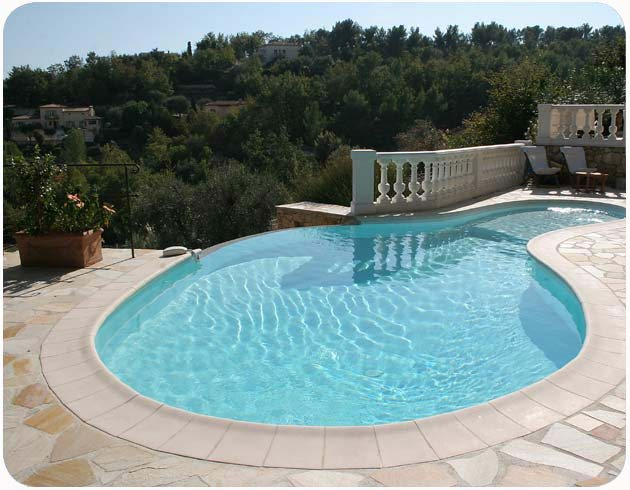
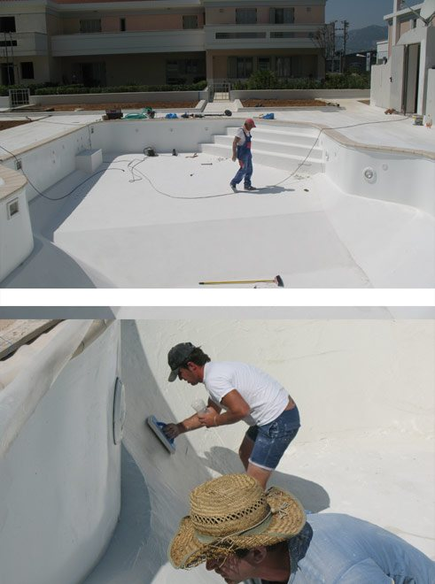
7 στάδια, μία πισίνα
Δείτε πώς χτίζεται μια πισίνα adrias, με φωτογραφίες από πραγματικό εργοτάξιο. Πατήστε σε κάθε στάδιο.
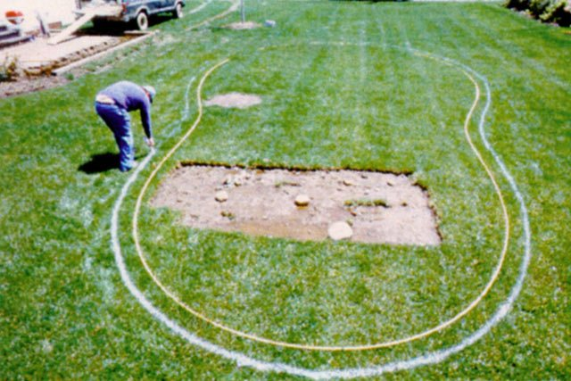
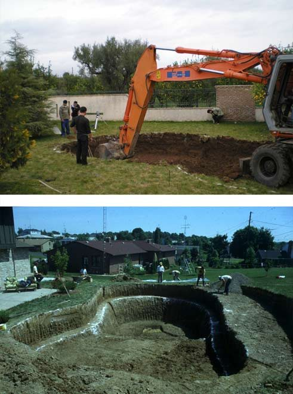

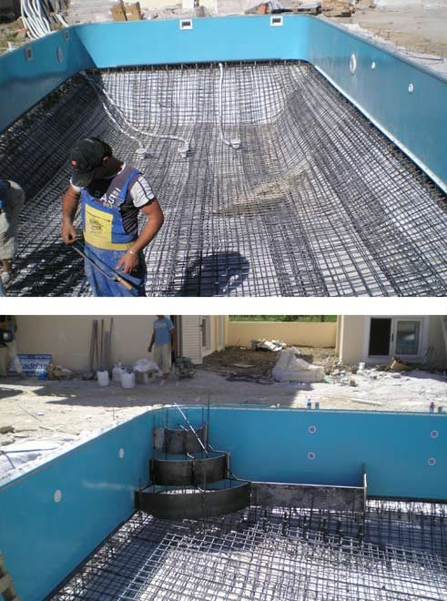
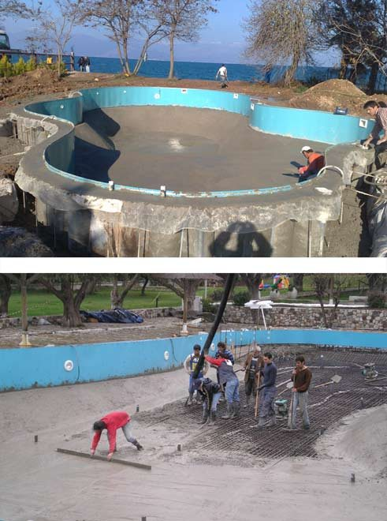
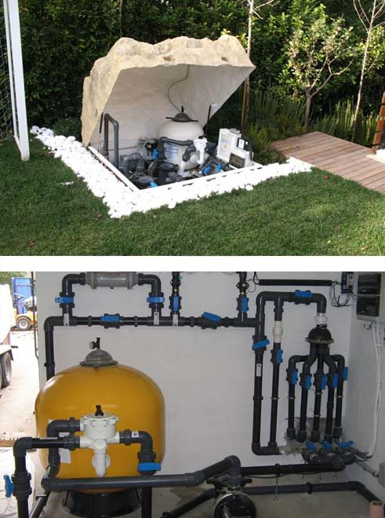
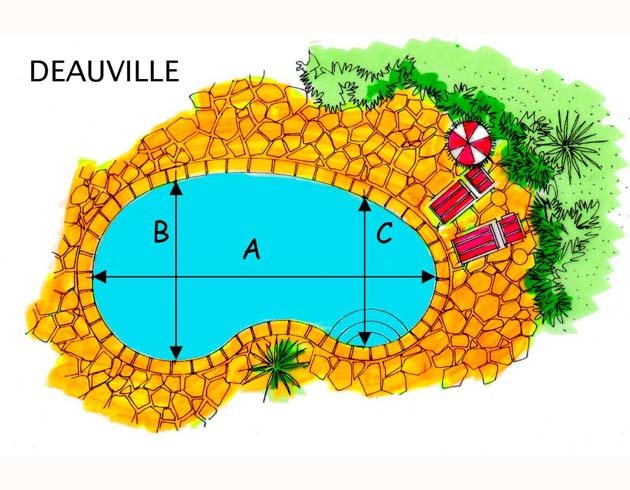
Από την κλασική γραμμή ως το δικό σας σχέδιο
Απαλά, αρμονικά σχήματα βοηθούν και την κυκλοφορία του νερού, άρα και τη διαύγειά του. Δείτε μερικά από τα σχέδιά μας:
Διαλέγετε εσείς κάθε λεπτομέρεια
Επειδή ο τοίχος της πισίνας είναι από μόνος του τελική επιφάνεια, δεν είστε υποχρεωμένοι να συμβιβαστείτε με liner.
Επενδύσεις
Βαφή, πλακάκι, ψηφίδα, χαλαζιακά κονιάματα, βοτσαλωτά, παραλία ή βραχάκια, με επιχείλια που δένουν με τον περιβάλλοντα χώρο.
Εξοπλισμός & άνεση
Σκάλες, γωνιακά καθίσματα, υδρομασάζ, σύστημα αντίθετης κολύμβησης, πλατύσκαλα και μπαρ μέσα στο νερό, υποβρύχιος φωτισμός.
Φίλτρανση QuickSkim
Αναρρόφηση από την επιφάνεια και τον πυθμένα, χωρίς νεκρές ζώνες: κρυστάλλινο νερό με λιγότερα χημικά, όλο τον χρόνο.
Αυτόματος καθαρισμός Easy Clean
Ενσωματωμένο στη δομή σύστημα σκουπίσματος: ξεχάστε σκούπα, κοντάρι και σωλήνες.
Θέρμανση πισίνας
Αντλίες θερμότητας για μεγαλύτερη κολυμβητική περίοδο, από το ενεργειακό μας τμήμα. Δείτε περισσότερα →
Συντήρηση & ανακαίνιση
Περιοδική συντήρηση, έλεγχος εξοπλισμού και ανακαίνιση παλαιότερων πισινών, από τους ανθρώπους που τις κατασκεύασαν.
Πισίνες με την τεχνολογία adrias
Ιδιωτικές κατοικίες, ξενοδοχεία, κάμπινγκ και δημόσιοι χώροι. Πατήστε μια φωτογραφία για μεγέθυνση.

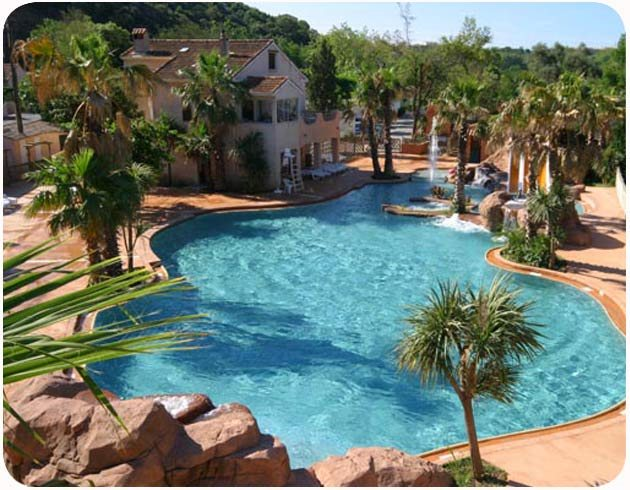
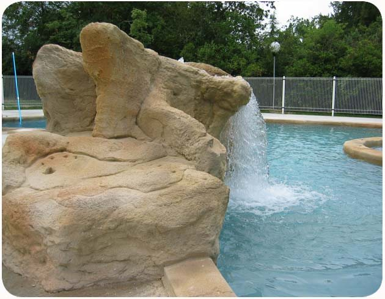
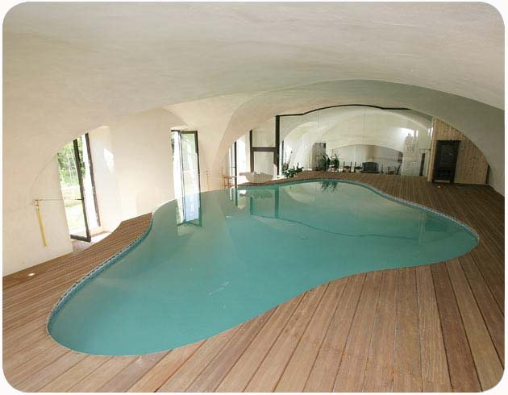
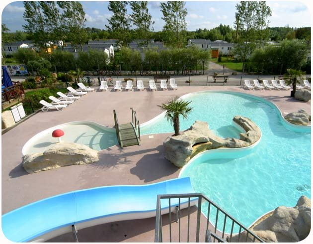
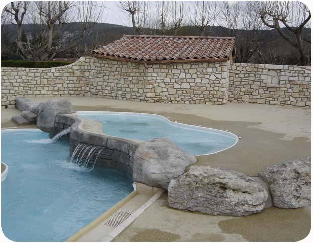
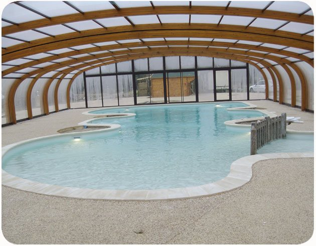
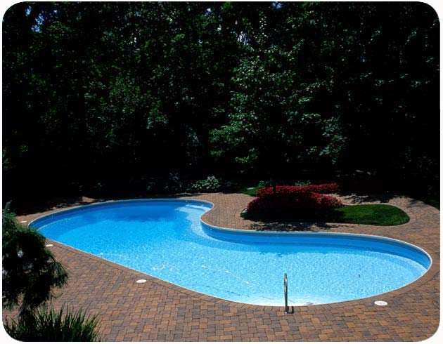
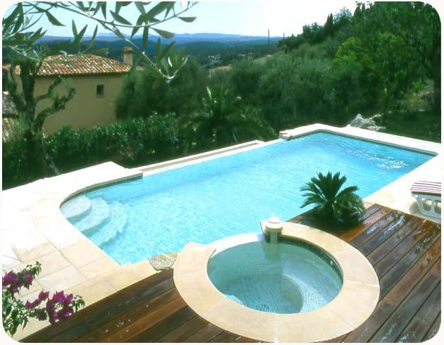
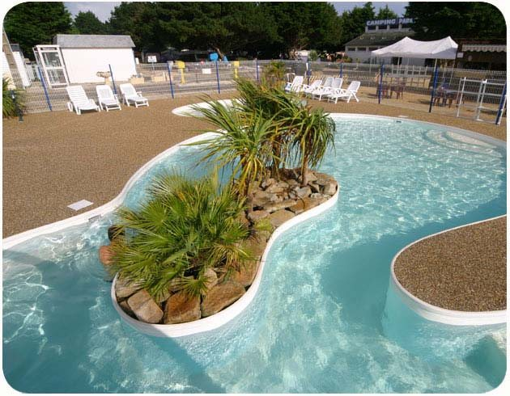
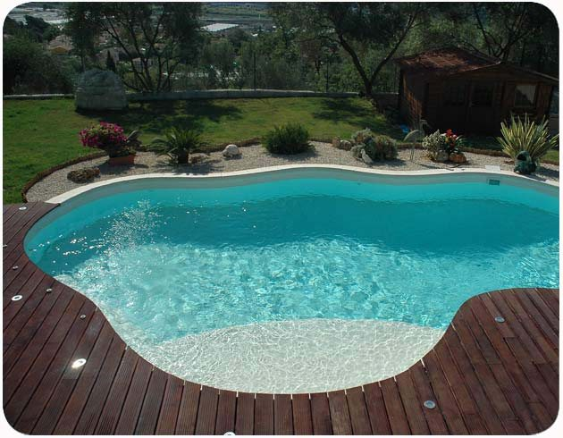
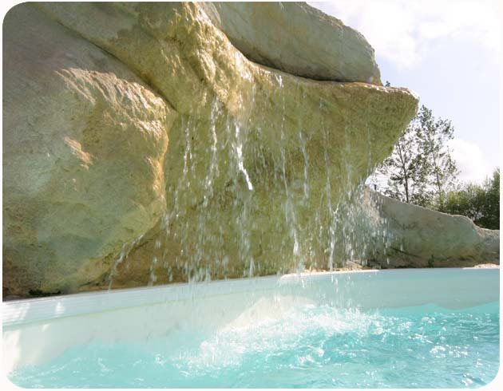
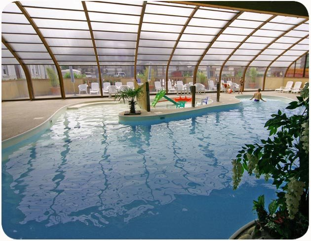
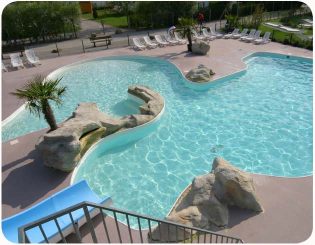
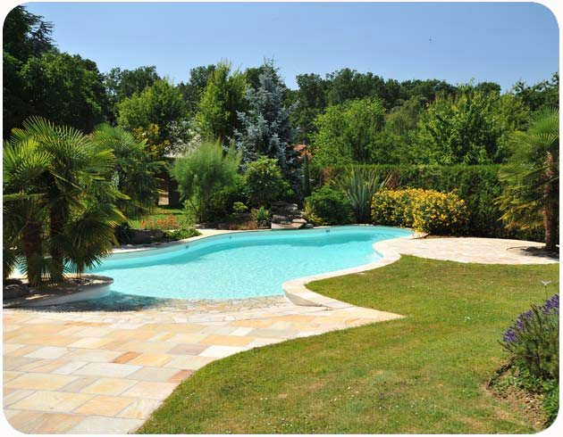
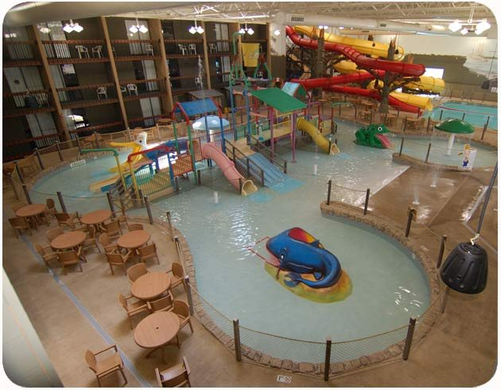
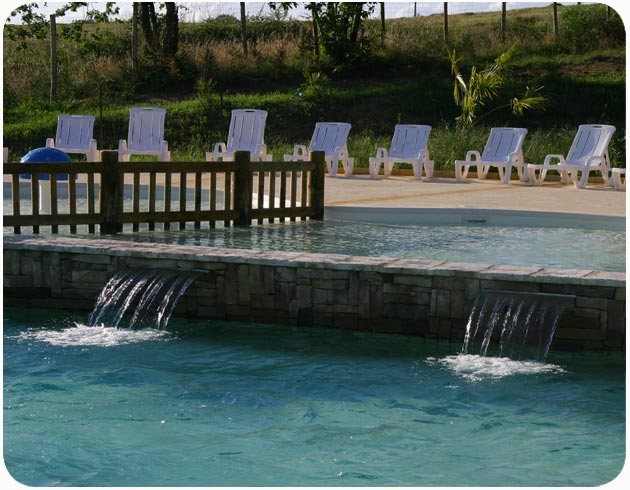
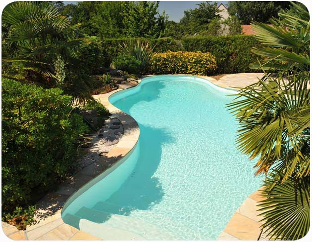
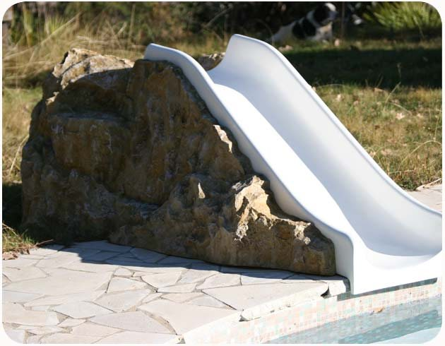
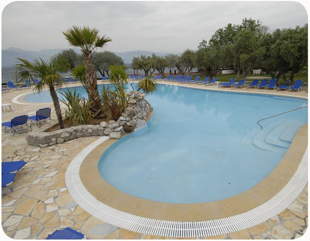
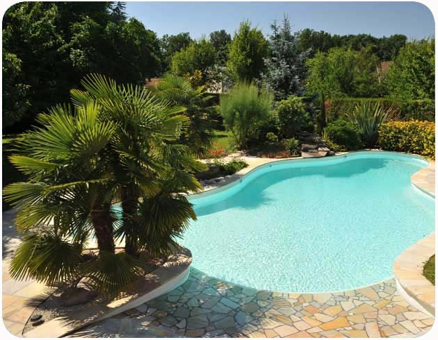
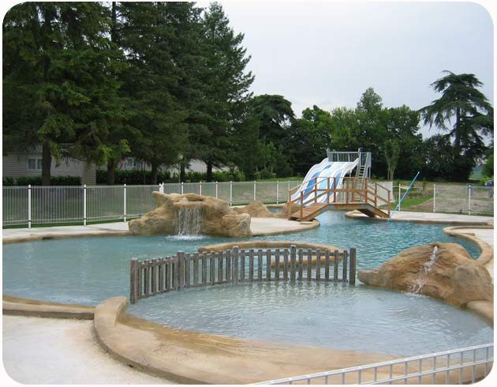
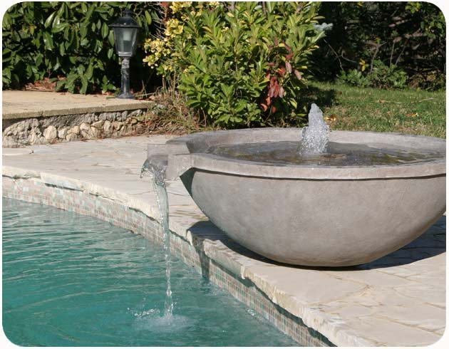
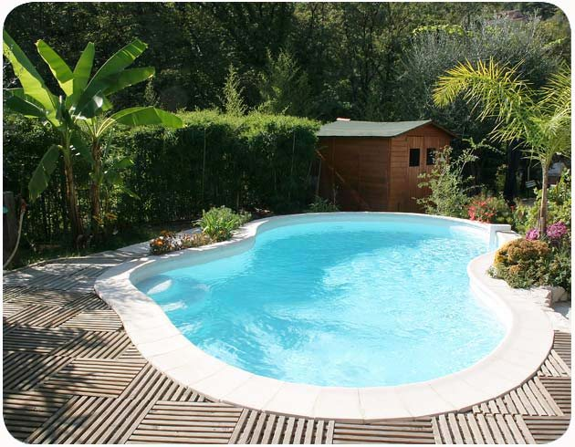
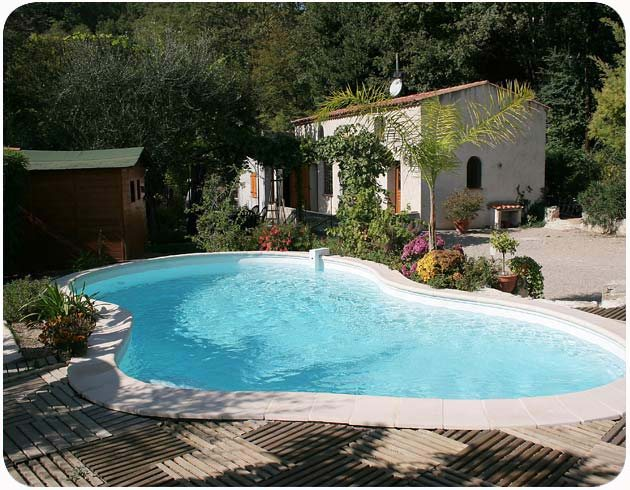
Ό,τι θέλετε να ξέρετε πριν ξεκινήσετε
Πόσο χρόνο χρειάζεται η κατασκευή;
Μια πισίνα adrias κατασκευάζεται συνήθως σε περίπου 15 ημέρες από την έναρξη των εργασιών. Πριν ξεκινήσουμε, σας δίνουμε γραπτά ένα ξεκάθαρο χρονοδιάγραμμα.
Είναι νόμιμη η πισίνα; Χρειάζεται μελέτη;
Ναι. Οι πισίνες adrias μελετώνται και κατασκευάζονται σύμφωνα με την ισχύουσα νομοθεσία, με εγκεκριμένη στατική μελέτη από τις πολεοδομικές αρχές και εγκεκριμένη ηλεκτρομηχανολογική μελέτη ανακυκλοφορίας και φίλτρανσης νερού.
Γιατί πισίνα από μπετόν και όχι με liner;
Το μπετόν δίνει βαριά, γερή και αντισεισμική δομή με μεγάλη διάρκεια ζωής. Με το τοίχωμα Betoform η επιφάνεια είναι ήδη στεγανή και λεία, οπότε διαλέγετε ελεύθερα την επένδυση (βαφή, πλακάκι, ψηφίδα, χαλαζιακό) χωρίς να εξαρτάστε από μια πλαστική μεμβράνη.
Είναι ακριβή η λειτουργία και η συντήρηση;
Όχι απαραίτητα. Η σωστή κυκλοφορία του νερού, η αποτελεσματική φίλτρανση και τα αυτόματα συστήματα καθαρισμού μειώνουν στο ελάχιστο τα χημικά και τον χρόνο συντήρησης. Σας δίνουμε εκτίμηση κόστους λειτουργίας για τη δική σας πισίνα.
Μπορεί η πισίνα να προσαρμοστεί στον προϋπολογισμό μου;
Ναι. Επειδή δεν υπάρχουν τυποποιημένες διαστάσεις, το σχήμα, το μέγεθος, οι επενδύσεις και ο εξοπλισμός επιλέγονται μαζί σας ώστε να ταιριάζουν στις ανάγκες και στις δυνατότητές σας.
Έτοιμοι για την πρώτη βουτιά;
Κλείστε μια αυτοψία χωρίς δέσμευση. Θα σας προτείνουμε σχήμα, διαστάσεις και κόστος, γραπτώς και με σαφήνεια.